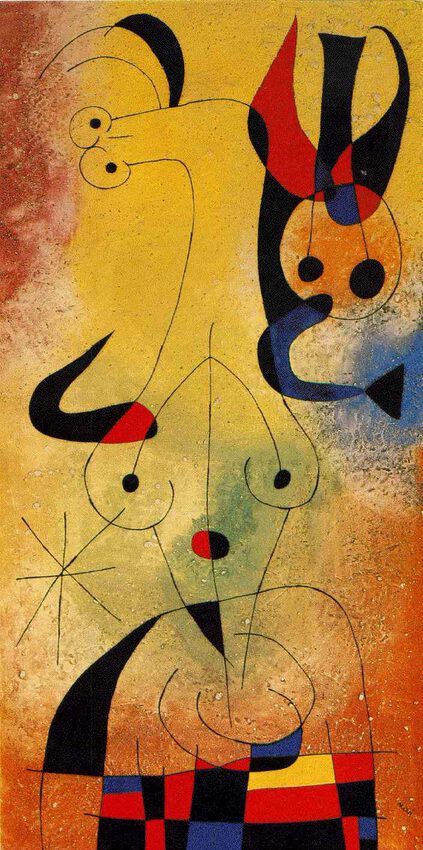

Joan Miro,1893 – 1983,Surrealism,Spanish,"Joan Miró i Ferrà (; Catalan: [ʒuˈam miˈɾo j fəˈra]; 20 April 1893 – 25 December 1983) was a Spanish painter, sculptor, and ceramicist born in Barcelona. A museum dedicated to his work, the Fundació Joan Miró, was established in his native city of Barcelona in 1975, and another, the Fundació Pilar i Joan Miró, was established in his adoptive city of Palma de Mallorca in 1981.",https://en.wikipedia.org/wiki/Joan_Miró,102
